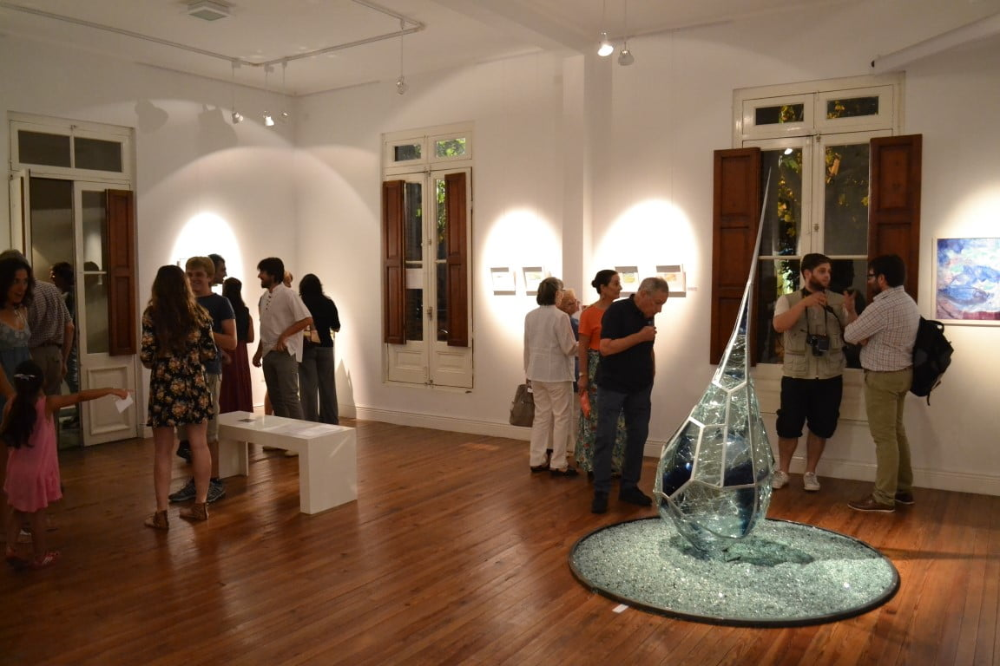
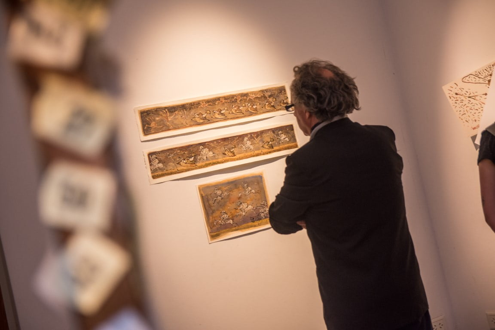
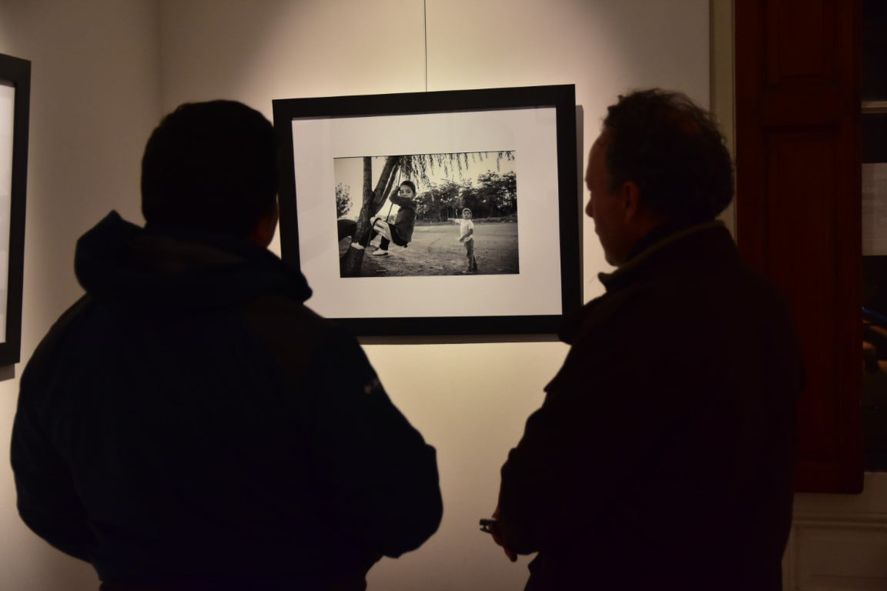
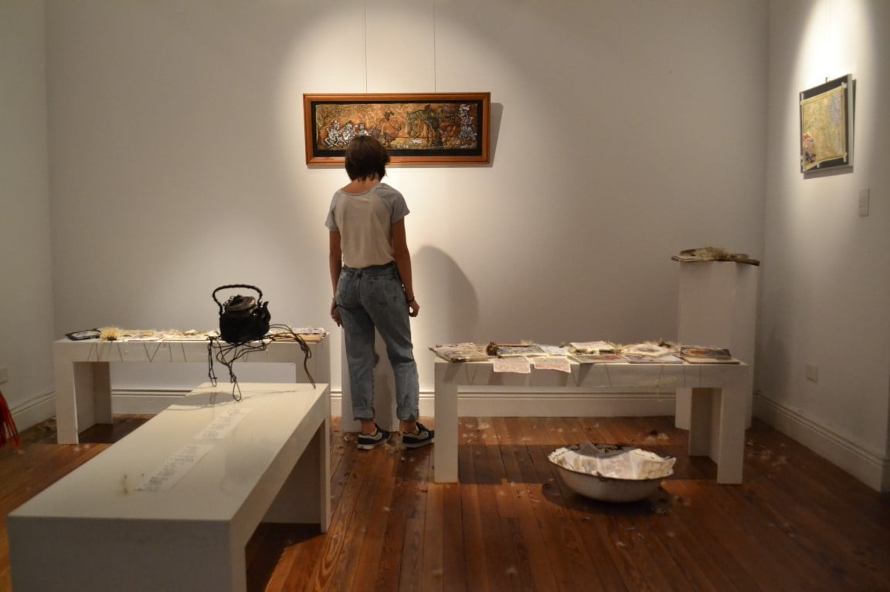
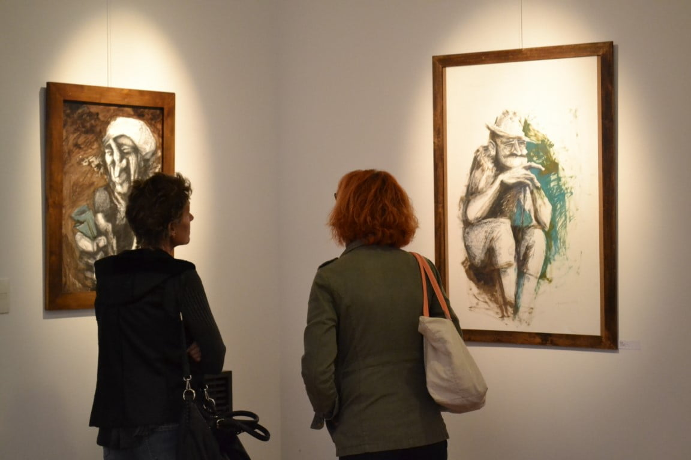

Los espacios
Seis áreas para el arte

01
Sala de Exposiciones
Realizamos exposiciones individuales y colectivas de artistas locales y de otras regiones del país. Charlas y diálogos con los artistas, seminarios, proyecciones, presentaciones de libros. Diversas propuestas temáticas y conceptuales generando trabajo en equipo y producciones colectivas.

02
Trastienda
Este sector está destinado a la exhibición, circulación y venta de obra, coordinando la posibilidad que el público también pueda conectarse con lxs artistas. Un espacio que agrega valor al entramado cultural y productivo de la comunidad.

03
Biblioteca
Nuestra biblioteca especializada en Arte y Cultura contiene libros, catálogos, revistas y otras publicaciones para su consulta. Se constituyó en 2012 junto con la apertura del espacio y cuenta con donaciones de personas e instituciones culturales.

04
Espacio Experimental
Se genera a partir de la conformación de la Asociación Civil Caminos del Mapa, inaugurado en 2020, como un nuevo espacio donde puedan realizarse encuentros, talleres, seminarios, charlas, proyecciones y micro residencias de arte.

05
Patio de Esculturas
El patio de MAPA aporta un recorrido dentro de un espacio verde donde conviven conjuntos de esculturas realizadas con materiales de desechos metálicos de artistas que forman parte del espacio.

06
Acciones con la Comunidad
MAPA como motor de transformación social. Talleres, intervenciones urbanas, proyectos educativos y acciones que llevan el arte más allá de las paredes del espacio hacia las calles y plazas de Las Flores.